Last updated: 2022-01-31
Checks: 6 1
Knit directory: funcFinemapping/
This reproducible R Markdown analysis was created with workflowr (version 1.6.2). The Checks tab describes the reproducibility checks that were applied when the results were created. The Past versions tab lists the development history.
The R Markdown is untracked by Git. To know which version of the R Markdown file created these results, you'll want to first commit it to the Git repo. If you're still working on the analysis, you can ignore this warning. When you're finished, you can run wflow_publish to commit the R Markdown file and build the HTML.
Great job! The global environment was empty. Objects defined in the global environment can affect the analysis in your R Markdown file in unknown ways. For reproduciblity it's best to always run the code in an empty environment.
The command set.seed(20210404) was run prior to running the code in the R Markdown file. Setting a seed ensures that any results that rely on randomness, e.g. subsampling or permutations, are reproducible.
Great job! Recording the operating system, R version, and package versions is critical for reproducibility.
Nice! There were no cached chunks for this analysis, so you can be confident that you successfully produced the results during this run.
Great job! Using relative paths to the files within your workflowr project makes it easier to run your code on other machines.
Great! You are using Git for version control. Tracking code development and connecting the code version to the results is critical for reproducibility.
The results in this page were generated with repository version 2532745. See the Past versions tab to see a history of the changes made to the R Markdown and HTML files.
Note that you need to be careful to ensure that all relevant files for the analysis have been committed to Git prior to generating the results (you can use wflow_publish or wflow_git_commit). workflowr only checks the R Markdown file, but you know if there are other scripts or data files that it depends on. Below is the status of the Git repository when the results were generated:
Ignored files:
Ignored: .ipynb_checkpoints/
Ignored: analysis/ldsc_results.nb.html
Ignored: analysis/mtsplice_finemapping_results.nb.html
Ignored: analysis/results.nb.html
Ignored: analysis/snp_finemapping_results.nb.html
Ignored: analysis/splicing.nb.html
Ignored: analysis/susie_tutorial.nb.html
Untracked files:
Untracked: SNPs_categories,png
Untracked: SNPs_categories.png
Untracked: analysis/asthma_prelim_results_archive.Rmd
Untracked: analysis/asthma_prelim_results_cp.Rmd
Untracked: analysis/asthma_results_cp.Rmd
Untracked: analysis/enhancer_gene_feature.Rmd
Untracked: analysis/feedback.Rmd
Untracked: analysis/gene_finemapping_results.Rmd
Untracked: analysis/learn_susie.Rmd
Untracked: analysis/mtsplice_finemapping_results.Rmd
Untracked: analysis/notes.Rmd
Untracked: analysis/snp_finemapping_results.Rmd
Untracked: analysis/splicing.Rmd
Untracked: analysis/susie_tutorial.Rmd
Untracked: bmi_locus1410.pdf
Untracked: code/.ipynb_checkpoints/
Untracked: code/ldsc_regression.sh
Untracked: code/make_plots.R
Untracked: code/run_ldsc.sh
Untracked: code/run_ldsc_with_bed.sh
Untracked: code/run_ldsc_with_bed_v2.sh
Untracked: code/run_susie.R
Untracked: code/run_torus.sh
Untracked: code/split_vcf.sh
Untracked: data/hg19_gtf_genomic_annots_ver2.gr.rds
Untracked: data/num_overlaps_finemapped_SNPs_and_ctcf.txt
Untracked: data/scz_2018
Untracked: data/torus_enrichment_novel_annot.est
Untracked: data/torus_joint_enrichment.est
Untracked: data/torus_joint_refined_enrichment.est
Untracked: enhancer_gene_feature.rmd
Untracked: fig1_panels.pdf
Untracked: fig2.pdf
Untracked: fig_panel2.pdf
Untracked: gene_mapping.pdf
Untracked: output/AAD/GMP_merge_stats.txt
Untracked: output/AAD/allergy/Ulirsch2019/GMP_merge_compare_old.est
Untracked: output/AAD/asthma_adult/Ulirsch2019/CD4_compare_old.est
Untracked: output/AAD/asthma_adult/Ulirsch2019/CD8_compare_old.est
Untracked: output/AAD/asthma_adult/Ulirsch2019/GMP_merge_compare_old.est
Untracked: output/AAD/asthma_child/Ulirsch2019/GMP_merge_compare_old.est
Untracked: output/LDL_ukb_L10.gif
Untracked: output/LDL_ukb_L10.pdf
Untracked: output/background_SNPs_annotated_percent.txt
Untracked: panel_figure2.pdf
Untracked: test.txt
Unstaged changes:
Modified: analysis/asthma_prelim_results.Rmd
Modified: analysis/asthma_results.Rmd
Modified: analysis/enrichment_analysis.Rmd
Modified: output/AAD/allergy/Ulirsch2019/GMP_merge_compare.est
Deleted: output/AAD/asthma/Caldero2019_diffDA_annot_percent.txt
Deleted: output/AAD/asthma/Caldero2019_stimuDA_annot_percent.txt
Deleted: output/AAD/asthma/celltype_specific_adult_lungs_torus.est
Deleted: output/AAD/asthma/diffe_adult_blood_torus.est
Deleted: output/AAD/asthma/joint_blood_immune_rest_vs_stimu.est
Deleted: output/AAD/asthma/joint_lung_vs_blood_immune_diff_torus.est
Deleted: output/AAD/asthma/joint_lung_vs_blood_immune_stimu_torus.est
Deleted: output/AAD/asthma/lung_clusters_dict.txt
Deleted: output/AAD/asthma/lung_clusters_info.txt
Deleted: output/AAD/asthma/stimu_adult_blood_torus.est
Deleted: output/AAD/asthma/torus_enrichment_all_rest.est
Deleted: output/AAD/asthma/torus_enrichment_all_stimulated.est
Deleted: output/AAD/asthma/zhang2021_annot_percent.txt
Deleted: output/AAD/asthma/zhang2021_cell_type_overlaps.txt
Deleted: output/AAD/asthma/zhang2021_peaks_per_celltype.txt
Modified: output/AAD/asthma_adult/Ulirsch2019/CD4_compare.est
Modified: output/AAD/asthma_adult/Ulirsch2019/CD8_compare.est
Deleted: output/AAD/asthma_adult/Ulirsch2019/GMP_merge_compare.est
Modified: output/AAD/asthma_child/Ulirsch2019/GMP_merge_compare.est
Deleted: output/asthma/Caldero2019_diffDA_annot_percent.txt
Deleted: output/asthma/Caldero2019_stimuDA_annot_percent.txt
Deleted: output/asthma/celltype_specific_adult_lungs_torus.est
Deleted: output/asthma/diffe_adult_blood_torus.est
Deleted: output/asthma/joint_lung_vs_blood_immune_diff_torus.est
Deleted: output/asthma/joint_lung_vs_blood_immune_stimu_torus.est
Deleted: output/asthma/lung_clusters_dict.txt
Deleted: output/asthma/lung_clusters_info.txt
Deleted: output/asthma/stimu_adult_blood_torus.est
Deleted: output/asthma/zhang2021_annot_percent.txt
Deleted: output/asthma/zhang2021_cell_type_overlaps.txt
Deleted: output/asthma/zhang2021_peaks_per_celltype.txt
Note that any generated files, e.g. HTML, png, CSS, etc., are not included in this status report because it is ok for generated content to have uncommitted changes.
There are no past versions. Publish this analysis with wflow_publish() to start tracking its development.
Compare 1kg with ukbb at L=10
[1] "The total number of cases when the ukb LD panel identifies more credible sets: 5"[1] "The total number of cases when the 1kg LD panel identifies more credible sets: 52"It shows the use of UKB LD panel in Susie fails to identify potential causal variants
compare_LD_plots("1452", "topleft")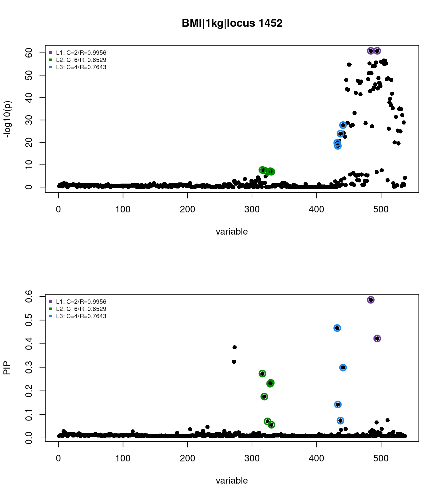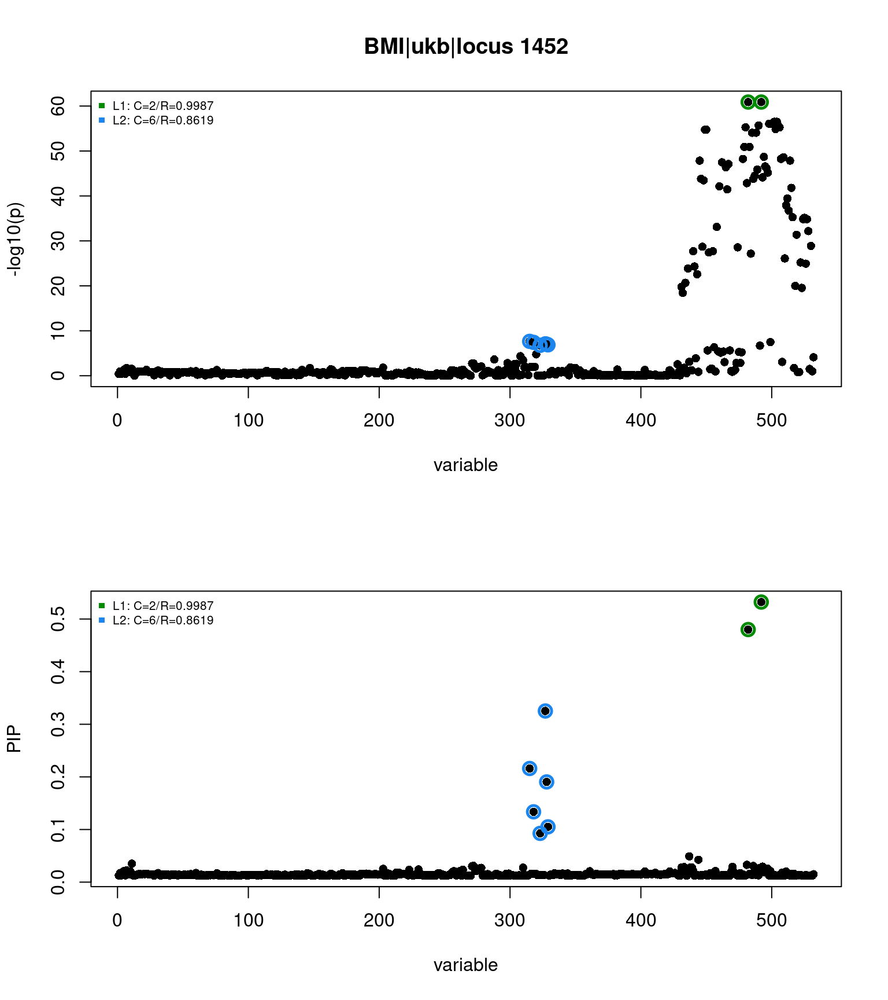 LD plots relative to the top SNP in the missing credible set
LD_plots(gwas.1kg.L10,"1452", "rs9939450", "1kg")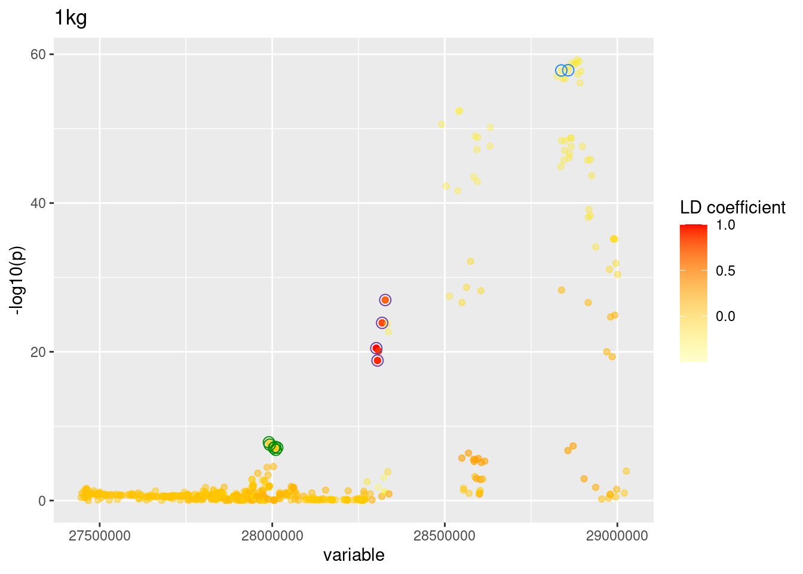
LD_plots(gwas.ukb.L10,"1452", "rs9939450")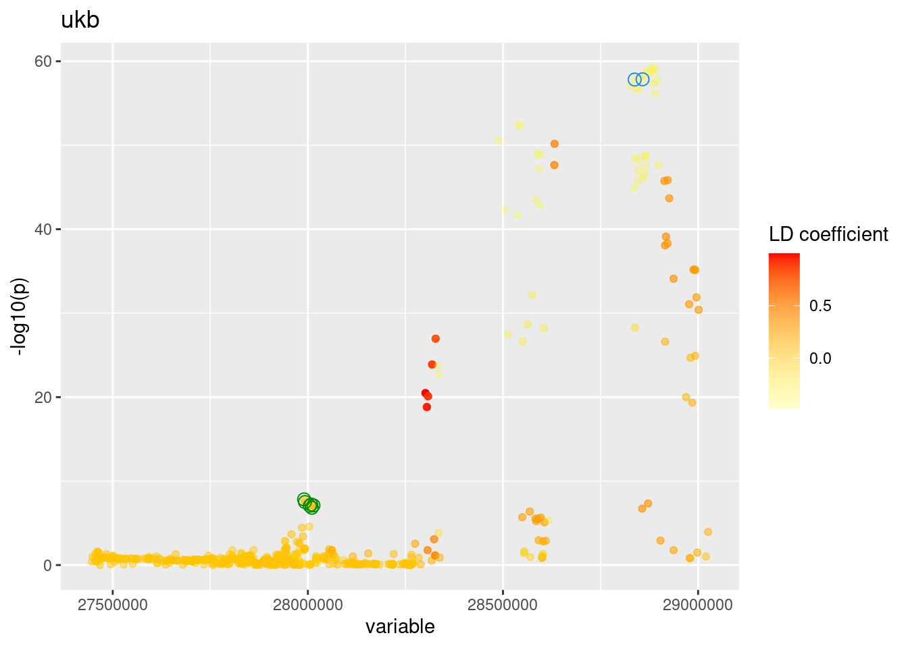 Check LD coefficients
The output table lists out the LD coefficients between the top SNPs from each credible set. SNPs are ranked by PIPs.
rs8049439 rs7206395 rs9939450
rs8049439 1.00 -0.01 0.0
rs7206395 -0.01 1.00 -0.3
rs9939450 0.00 -0.30 1.0 rs8049439 rs7206395 rs9939450
rs8049439 1.00 0.03 -0.01
rs7206395 0.03 1.00 -0.42
rs9939450 -0.01 -0.42 1.00It shows the use of UKB LD panel in Susie identifies additional credible set. 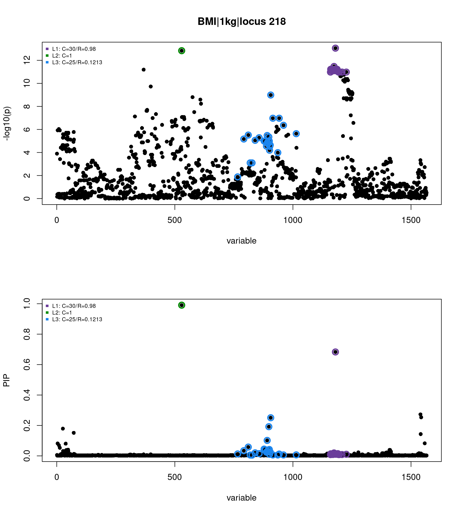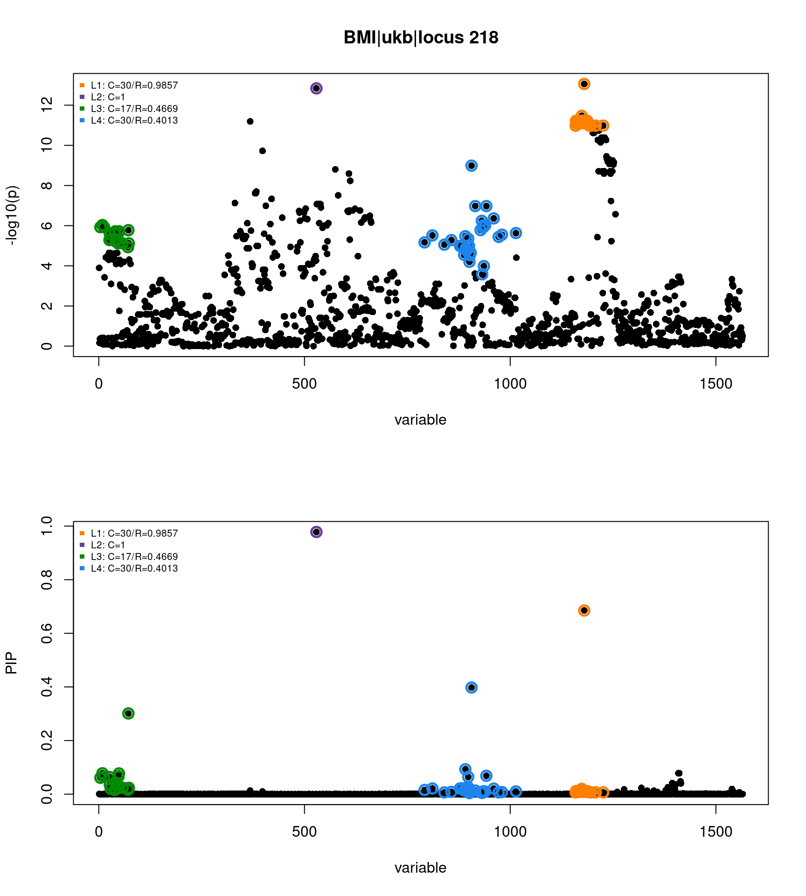 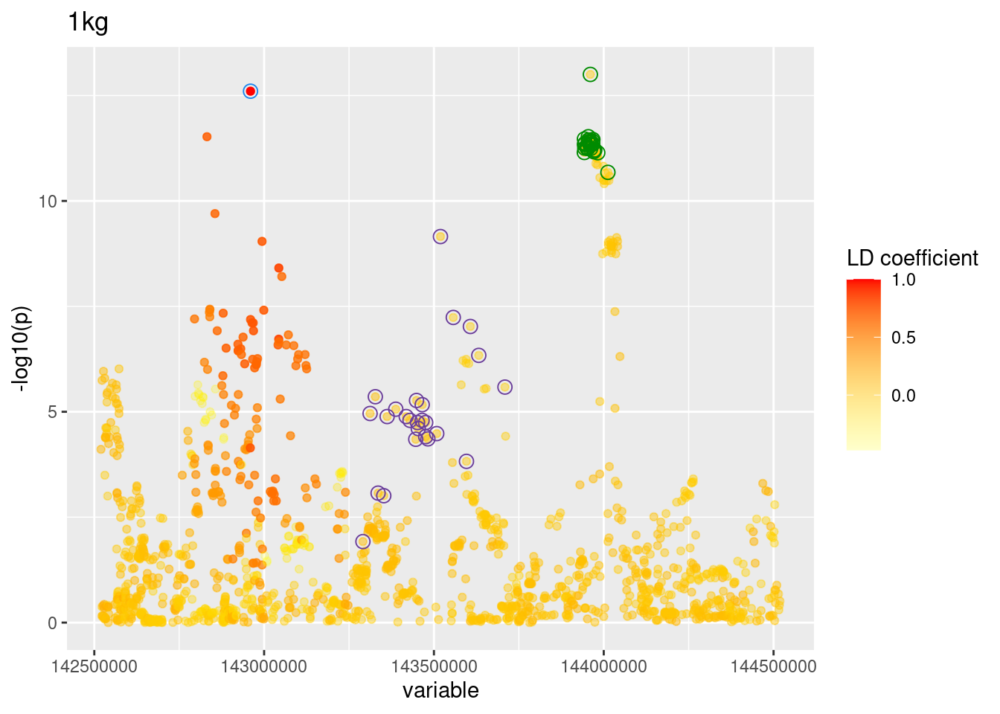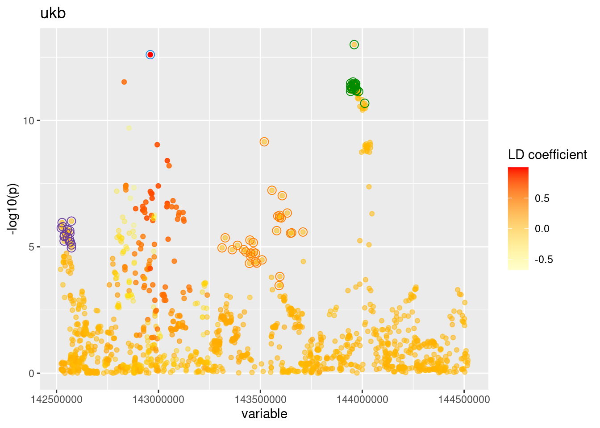 Check LD coefficients
* 1KG LD matrix
rs2890652 rs6710871 rs16847247 rs4662565
rs2890652 1.00 0.00 -0.08 0.05
rs6710871 0.00 1.00 -0.02 -0.05
rs16847247 -0.08 -0.02 1.00 -0.14
rs4662565 0.05 -0.05 -0.14 1.00 rs2890652 rs6710871 rs16847247 rs4662565
rs2890652 1.00 -0.06 -0.06 0.01
rs6710871 -0.06 1.00 -0.04 -0.03
rs16847247 -0.06 -0.04 1.00 -0.09
rs4662565 0.01 -0.03 -0.09 1.00The use of UKB LD panel in Susie removes two credible sets previously identified using 1kg. 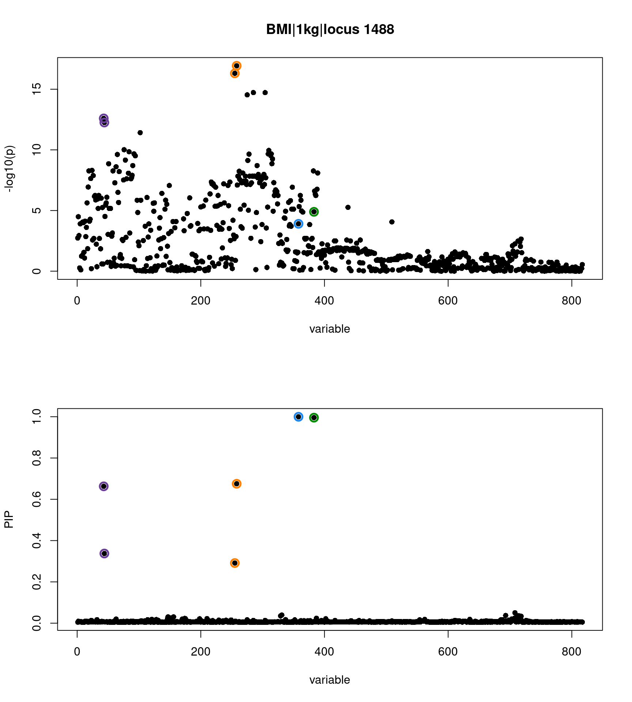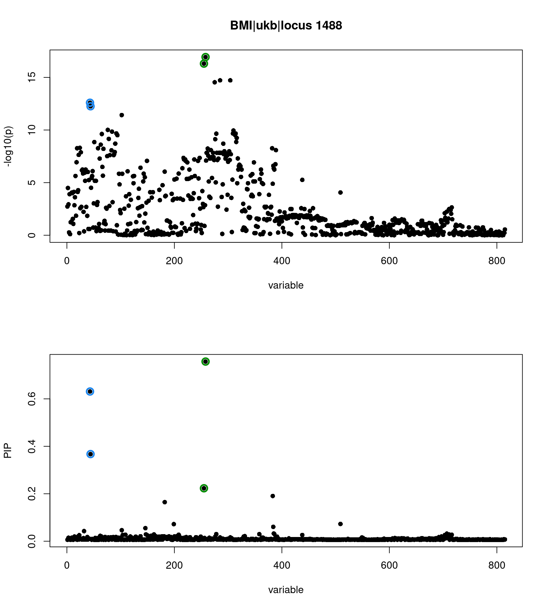 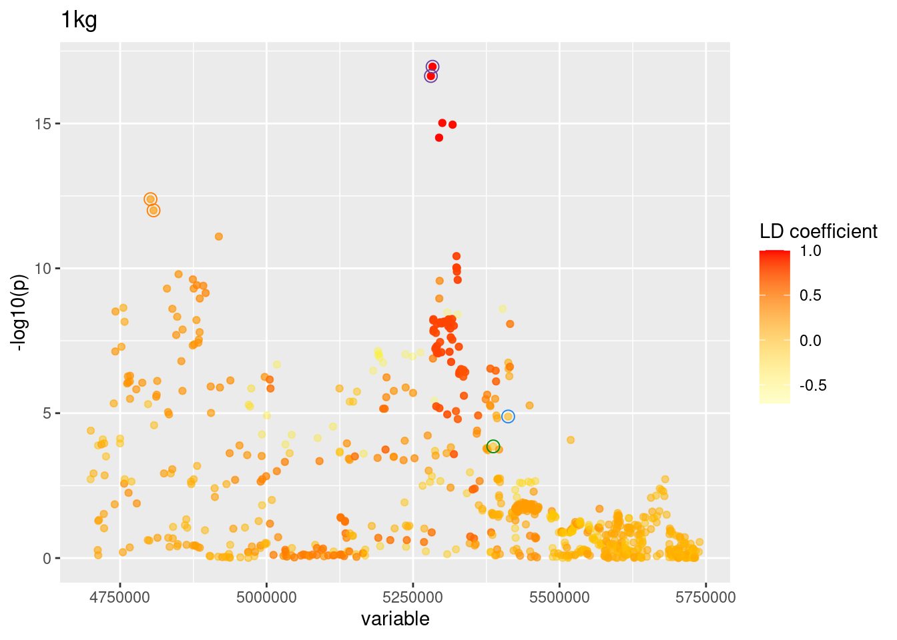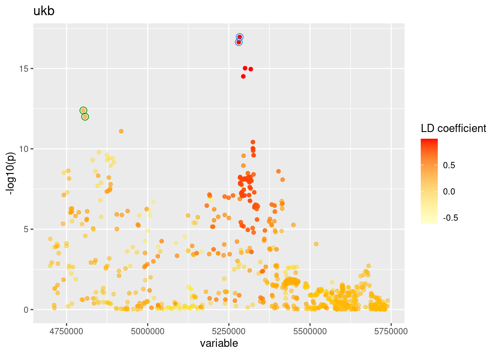 Check LD coefficients
* 1KG LD matrix
rs8079034 rs3026155 rs1000940 rs12936083
rs8079034 1.00 0.21 -0.10 -0.09
rs3026155 0.21 1.00 -0.13 -0.01
rs1000940 -0.10 -0.13 1.00 0.48
rs12936083 -0.09 -0.01 0.48 1.00 rs8079034 rs3026155 rs1000940 rs12936083
rs8079034 1.00 0.20 -0.08 -0.07
rs3026155 0.20 1.00 -0.12 0.07
rs1000940 -0.08 -0.12 1.00 0.41
rs12936083 -0.07 0.07 0.41 1.00
sessionInfo()R version 4.0.4 (2021-02-15)
Platform: x86_64-pc-linux-gnu (64-bit)
Running under: Scientific Linux 7.4 (Nitrogen)
Matrix products: default
BLAS/LAPACK: /software/openblas-0.3.13-el7-x86_64/lib/libopenblas_haswellp-r0.3.13.so
locale:
[1] LC_CTYPE=en_US.UTF-8 LC_NUMERIC=C
[3] LC_TIME=en_US.UTF-8 LC_COLLATE=en_US.UTF-8
[5] LC_MONETARY=en_US.UTF-8 LC_MESSAGES=en_US.UTF-8
[7] LC_PAPER=en_US.UTF-8 LC_NAME=C
[9] LC_ADDRESS=C LC_TELEPHONE=C
[11] LC_MEASUREMENT=en_US.UTF-8 LC_IDENTIFICATION=C
attached base packages:
[1] stats graphics grDevices utils datasets methods base
other attached packages:
[1] finemappeR_0.0.0.9000 dplyr_1.0.4 data.table_1.14.0
[4] ggplot2_3.3.3 susieR_0.11.92 RColorBrewer_1.1-2
[7] bigsnpr_1.8.1 bigstatsr_1.5.1
loaded via a namespace (and not attached):
[1] Rcpp_1.0.7 lattice_0.20-41 assertthat_0.2.1 rprojroot_2.0.2
[5] digest_0.6.27 foreach_1.5.1 utf8_1.2.2 R6_2.5.1
[9] bigsparser_0.4.4 plyr_1.8.6 evaluate_0.14 highr_0.8
[13] pillar_1.5.0 flock_0.7 rlang_0.4.11 irlba_2.3.3
[17] jquerylib_0.1.3 Matrix_1.3-4 rmarkdown_2.7 labeling_0.4.2
[21] bigparallelr_0.3.1 readr_1.4.0 stringr_1.4.0 munsell_0.5.0
[25] mixsqp_0.3-43 compiler_4.0.4 httpuv_1.5.5 xfun_0.21
[29] pkgconfig_2.0.3 htmltools_0.5.1.1 tidyselect_1.1.1 tibble_3.0.6
[33] workflowr_1.6.2 codetools_0.2-18 matrixStats_0.58.0 reshape_0.8.8
[37] fansi_0.5.0 crayon_1.4.1 withr_2.4.2 later_1.1.0.1
[41] grid_4.0.4 jsonlite_1.7.2 gtable_0.3.0 lifecycle_1.0.0
[45] DBI_1.1.1 git2r_0.28.0 magrittr_2.0.1 scales_1.1.1
[49] stringi_1.5.3 farver_2.1.0 fs_1.5.0 promises_1.2.0.1
[53] doParallel_1.0.16 bslib_0.2.4 ellipsis_0.3.2 generics_0.1.0
[57] vctrs_0.3.8 cowplot_1.1.1 iterators_1.0.13 tools_4.0.4
[61] glue_1.4.2 purrr_0.3.4 hms_1.0.0 parallel_4.0.4
[65] yaml_2.2.1 colorspace_2.0-2 bigassertr_0.1.4 knitr_1.31
[69] sass_0.3.1